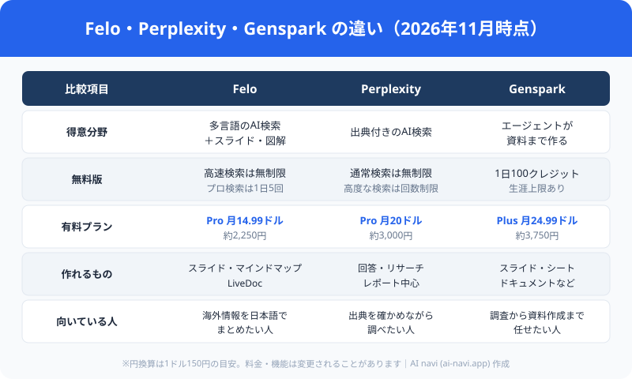

Feloとは？多言語に強いAI検索
Feloは、キーワードではなく文章で質問すると、ウェブ上の複数の情報源を読み比べて答えをまとめ、出典リンクを添えて返してくれるAI検索サービスです。公式サイトは自らを「多言語AI検索・作成プラットフォーム」と位置づけています。
特徴は大きく2つあります。
- 言語をまたいだ検索：日本語で質問しても、英語など他の言語の情報源も含めて調べ、日本語で答えを返します。海外の最新情報や論文を追いたい人に向いています。
- 検索結果を「作る」に広げられる：回答をもとにスライドやマインドマップを作ったり、ドキュメント作成ツールのLiveDocで資料にまとめたりできます。
普段のGoogle検索で「いくつもページを開いて読み比べる」作業を短くしたい人にとって、最初に試しやすいAI検索の一つです。
Feloの登録手順（無料）
Feloはログインしなくても検索を試せますが、履歴の保存やプロ検索を使うにはアカウントを作ります。公式ヘルプで案内されている手順は次のとおりです。
- felo.ai を開く：画面の「ログイン」を押します。
- ログイン方法を選ぶ：公式ヘルプで最も手軽とされているのはGoogleアカウントでのログインです。メールアドレスでも登録でき、その場合はログイン用のリンクがメールで届きます。
- 表示言語や回答言語を確認する：プロフィール設定から言語を変えられます。日本語で答えてほしい場合はここを日本語にしておきます。
登録時の注意
- 公式ヘルプによると、登録したメールアドレスはあとから変更できません。仕事用・個人用どちらで使うか決めてから登録しましょう。
- メール登録の場合はパスワードも作れます。忘れたときは「Forgot Password」から再設定します。
基本の使い方：高速検索とプロ検索
ログインしたら、トップの入力欄に質問を文章で入れるだけです。Feloの検索には大きく2種類あります。
| 検索モード | 特徴 | 無料版 | 向いている質問 |
|---|---|---|---|
| 高速検索 | すばやく要点をまとめて答える | 回数無制限 | 言葉の意味、ニュースの概要、ちょっとした確認 |
| プロ検索 | より多くの情報源を読み込み、深く答える | 1日5回まで | 比較検討、背景の整理、レポートの下調べ |
質問のコツは、条件を具体的に書くことです。「おすすめのノートPC」より「大学のレポート作成用に、10万円以下で軽いノートPCを選ぶときのポイント」のほうが、的を絞った答えが返ってきます。答えの下には出典が並ぶので、気になる部分はリンク先を開いて確かめましょう。
続けて質問すると、前の回答をふまえて深掘りできます。「この中で学生向けに絞ると？」「表にして」のように会話でつなげていくのが効率的です。
目的別の質問例
| 目的 | 質問の例 | おすすめモード |
|---|---|---|
| 海外ニュースを知る | 今週発表された海外の生成AIの主なニュースを、日本語で5つに要約して | 高速検索 |
| レポートの下調べ | 日本と欧州の再生可能エネルギー政策の違いを、出典付きで比較して | プロ検索 |
| 買い物の比較 | 一人暮らし向けの電気ケトルを選ぶときに見るべきポイントを教えて | 高速検索 |
| 仕事の資料づくり | 中小企業のDX事例を調べて、マインドマップに整理して | プロ検索＋マインドマップ |
無料版はプロ検索が1日5回までなので、概要は高速検索でつかみ、本当に深く知りたい質問だけプロ検索に回すと回数を節約できます。時事性の高い話題では、回答に出てくる日付も必ず確認しましょう。古い記事が出典になっていると、すでに状況が変わっていることがあります。
Feloの主な機能
2026年11月時点で、Feloの公式サイトに掲載されている主な機能を整理します。
| 機能 | できること |
|---|---|
| AI検索 | 多言語の情報源を横断し、出典付きで回答。高速検索とプロ検索を使い分ける |
| AIスライド | 検索結果やテーマからスライドを作成 |
| マインドマップ | 調べた内容を枝分かれの図で整理。各ブランチをスライドなどに展開できる |
| LiveDoc | AIエージェントと1枚のキャンバスで資料を作る。PowerPointの翻訳、PDFへの質問、YouTube動画の要約、LP作成、画像生成、調査レポート作成など |
| Agents | 特定の作業に特化したAIエージェントを使う |
| LLM Playground | 複数のAIモデルを選んで対話する |
なかでも使い道が広いのはLiveDocです。公式ページでは、デザインを保ったままPowerPointを多言語に翻訳する機能や、PDFに質問して内容を確かめる機能が紹介されています。英語の資料を読む機会が多い人には、検索以外の場面でも役立ちます。
ただし、スライドやLiveDocなどの作成系機能はクレジットを消費します。無料版でどこまで使えるかは時期によって変わっているため、次の料金の章で確認してください。
Feloで作ったスライドは「たたき台」と割り切るのがおすすめです。見た目をしっかり整えたいときは、デザイン専用のツールで仕上げると早いですよ。
【PR】スライドや画像の見た目を整えたい方へ：Feloで作った構成をもとに、テンプレートで手早くデザインできるMiriCanvasで仕上げる方法もあります。
無料枠と料金（2026年11月時点）
Feloは2025年7月に、機能ごとの回数制から共通のクレジット制に切り替わりました。検索・スライド・LiveDocなどの利用でクレジットを消費します（公式ブログによると、プロ検索は1回15クレジット）。
| 項目 | 無料版 | Felo Pro |
|---|---|---|
| 料金 | 0円 | 月14.99ドル（約2,250円） 年払い149.99ドル |
| 高速検索 | 無制限 | 無制限 |
| プロ検索 | 1日5回 | クレジット内で利用。使い切っても1日300回まで |
| クレジット | 1日200の付与が案内されてきたが、新規ユーザー向けの期間限定とする情報もあり | 請求サイクルごとに15,000（繰り越しなし） |
| 追加クレジット | — | 購入可能（購入から90日有効） |
※円換算は1ドル150円の目安。ドル建てのため請求額は為替で変わります。
Perplexity Pro（月20ドル、約3,000円）やChatGPT Plus（月3,000円前後）と比べると、Felo Proは少し安い価格帯です。ただしクレジット制なので、スライドや資料作成を多用すると早めに残高がなくなります。検索中心なら無料版、資料作成まで毎日使うならProという分け方がわかりやすいでしょう。
Feloの料金・無料枠は改定が多く、無料版のクレジットの扱いは情報源によって記載が異なります。契約前に必ず公式の料金ページで最新の条件を確認してください。
Feloでできること・できないこと
できること
- 海外の情報も含めて調べ、日本語でまとめる
- 回答に出典を付けて確認しやすくする
- 検索結果をスライド・マインドマップに展開する
- PowerPointの翻訳やPDFへの質問（LiveDoc）
できない・苦手なこと
- 回答の正確さの保証（要約で誤りが入ることがある）
- 無料版での深い調査の連発（プロ検索は1日5回）
- 完成度の高いデザイン資料をそのまま作ること
- ログインが必要なページや有料記事の中身の参照
Perplexity・Gensparkとの違い

Feloとよく比べられるのがPerplexityとGensparkです。3つとも「AIが調べて答える」点は同じですが、重心が違います。
- Perplexity：出典付きのAI検索が中心。答えと根拠をすばやく確かめたい人向け。Proは月20ドル（約3,000円）。
- Felo：多言語の検索に加えて、スライド・マインドマップ・LiveDocへの展開が得意。Proは月14.99ドル（約2,250円）。
- Genspark：エージェントが調査から資料作成までを自動で進める。Plusは月24.99ドル（約3,750円）。
迷ったら、調べもの中心ならPerplexityかFeloの無料版、資料づくりまで丸ごと任せたいならGensparkと考えると選びやすくなります。ほかの無料AIツールとも比べたい方は「無料AIツールおすすめ20選」も参考にしてください。
よくある質問
まとめ
Feloは、多言語の情報をまとめて調べ、その結果をスライドや図に広げられるAI検索です。
- 登録はGoogleかメールで。メールアドレスはあとから変更不可
- 無料版でも高速検索は無制限、プロ検索は1日5回
- Felo Proは月14.99ドル（年149.99ドル）、15,000クレジット付き
- 検索中心ならPerplexityとの併用、資料化まで任せるならGensparkも候補
まずは無料版で、いつもGoogleで調べている質問を1つ投げてみてください。出典の出し方や日本語のまとめ方が自分に合うかどうかは、数回使えば判断できます。
参考：
Felo 料金ページ（Pricing）
Felo公式ブログ「Major Upgrade of the Personal-User Subscription」（クレジット制の解説）
Felo ヘルプ（アカウント・言語設定）
Felo LiveDoc 公式ページ
Zemith「Felo pricing」（2026年11月19日確認の料金まとめ）
※料金・機能は2026年11月時点の情報です。最新情報は公式サイトでご確認ください。